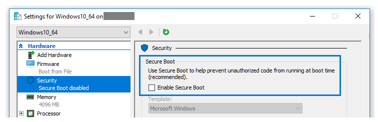
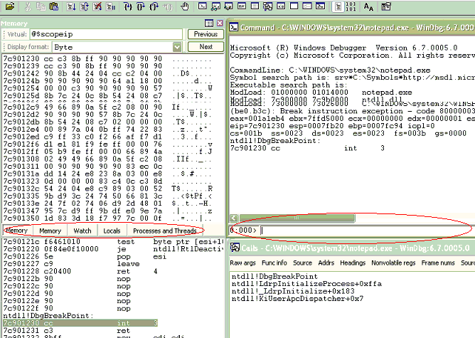

| Baixando símbolos e módulos programaticamente 2025-03-30 debugging code Essa semana descobri que é possível baixar não apenas os PDBs do symbol server da Microsoft, mas os binários também. Existem relatos de erros de download para alguns binários específicos, mas em geral é possível baixar qualquer arquivo indexado por eles. Para isso você precisa ter em mãos o timestamp do binário, que antes era um timestamp mesmo, mas após o Windows 10 virou um hash único que identifica o mesmo binário e passível de ser compilado de novo exatamente como era, e o tamanho da imagem. Ambas as informações ficam na header do arquivo PE, mas depois que você consegui-las não precisa mais do binário (teoricamente). O código abaixo demonstra isso: |
| Comparando logs no procmon 2024-03-30 computer debugging Quando precisar comparar duas execuções distintas pelos logs do procmon primeiro você precisa eliminar as colunas que serão obviamente diferentes, como data e hora e talvez detalhes da operação. Mantenha o PID, pois com o PID é possível identificar o processo no meio de vários que precisar logar. |
| Setando próxima instrução no WinDbg 2023-10-04 debugging reversing windbg Procurando onde setar a próxima instrução no WinDbg? Dica: curiosamente ela não fica no meio dos comandos de debug, mas no menu Edit. Selecione a linha desejada no assembly ou código-fonte para onde deseja alterar o fluxo de execução e use a opção "Set Current Instruction". |
| UWP apps não funcionam com proxy de loopback (resolvido) 2023-09-07 reversing debugging computer Durante minha pesquisa para entender como funciona o login no Azure AD chegou a mim a informação muito pertinente de que proxies locais não funcionam por padrão com aplicativos UWP. Isso acontece porque além dos apps rodarem dentro de um AppContainer isolado com seu próprio SID, os privilégios desse SID por padrão são muito limitados. Talvez no futuro isso funcione, mas no momento não. |
| TRAFFIC 2023-09-07 blogging reversing debugging computer Observei esta anotação em meu journal de muitos anos atrás (2009) e ela continua atual. Baseado em um powerpoint do cientista da computação Andreas Zeller, autor de Why Programs Fail, este acrônimo é um caminho fácil de lembrar quando precisamos encontrar um bug no sistema. Eu lembro que estava pensando até em escrever um artigo na época, mas ainda estava trabalhando a questão de como traduzir as siglas para o português. |
| Debugging a non signed driver in Windows 10 2023-06-15 english debugging computer Not always just to disable driver signing enforcement work in Windows. In Windows 10 when tried to start a driver after reboot with `bcdedit -set TESTSIGNING ON` I still got the `StartService FAILED 577: Windows cannot verify the digital signature for this file` message. |
| Critical Sections and Outlook 2023-06-15 reversing english debugging computer Today was a happy crush analysis day, because I receive an Outlook memory dump the moment it frooze the main window in the beginning of the process. I asked for one because it could be useful to another analysis I was doing with Office server communication. |
| Como analisar assembly x64 2023-04-05 blogging videos debugging Recomendo a leitura do artigo "X64 Deep Dive" para se habituar às idiossincrasias sobre o formato assembly do x64, especialmente se você costuma depurar assembly para Windows. O artigo descreve as novas funcionalidades que suportam os 64 bits do formato do executável Windows, o Portable Executable, além de explicar em detalhes o funcionamento de mecanismos que mudaram, como o tratamento de exceção (e o unwinding no código). |
| Meditação é self debugging 2022-05-31 debugging computer Depois que a tempestade na cabeça chega em um nível insuportável há uma calmaria, ou deveria haver, onde o corpo percebe que está vivo, que não existe no tempo e espaço. Existe apenas agora, e tão somente agora, pois o passado é uma máquina de estado mantida pelo cérebro, e o futuro a projeção extrapolada dessa máquina. |
| Como resolver ownership do SSH 2021-10-19 debugging computer Primeiro tente logar com o usuário enquanto roda o comando abaixo no server para ver mensagens de log: # see logs from ssh server journalctl -f -t sshd Se for problema de ownership então resolva dessa forma: |
|  Como Configurar Debug de Kernel Pela Rede (Hyper-V Edition) 2021-05-01 videos debugging computer Estava pensando em transformar alguns posts antigos que estou revisando em vídeos no YouTube. Acho que o esforço para fazer isso é relativamente baixo se for sem áudio, sem edição e apenas com o que eu naturalmente faria para validar as partes técnicas, e muita gente poderia aprender algumas coisas, como, por exemplo, configurar o debug de kernel. |
| O Bug Mais Bizarro que já Resolvi 2020-05-10 crypto reversing assembly flow debugging computer Máquina IBM velha e empoeirada. Criptografia blowfish. Assembly 16 bits. Programa residente. E nenhum depurador funcionando. Tudo o que eu tinha se resumia em dois itens de inventário: o conhecimento, adquirido aos poucos do sistema, e minha imaginação. Era uma amena semana de abril em 2008 isolado em uma sala. Tudo que havia em volta eram papéis com anotações feitas. Observava uma nova pista todo dia, embora sem ter muita certeza. Àquela altura qualquer coisa serviria. |
| Minha Palestra Sobre Windbg 2020-04-18 debugging computer A MBConf@Home2020 foi um sucesso. Parabéns aos organizadores, palestrantes e apoiadores. Eu nunca fui em um evento de tecnologia em que tudo funcionou do começo ao fim. Simplesmente fantástico o nível de qualidade da organização. Fora que trezentas pessoas ficaram em casa e participaram conosco dessa troca de conhecimento =). |
| Sobre a BitForge 2014-07-03 debugging computer BitForge é minha empresa principal e onde eu trabalho resolvendo os problemas mais difíceis de computação; nos contrate para resolver seu problema [pelo Linkedin] ou enviando um email para wanderleycaloni@gmail.com. Conversar sobre seu projeto e até gastar uma horinha entendendo ele faz parte do nossa forma de se aproximar de você sem precisar da burocracia de um contrato ou pagamento de consultoria. Marque um café ou uma call conosco =) |
| Debug remoto no C++ Builder 2007-12-13 debugging cppbuilder computer Esse é um detalhe que pode passar despercebido da maioria da população Borland, mas o Builder, assim como o Visual Studio, possui sua suíte para depuração remota. E tudo o que você precisa fazer é instalar um pacote no cliente. |
|  Introdução ao Debugging Tools for Windows (usando o Logger para monitorar APIs) 2007-06-20 windbg debugging drafts computer 2025-10-05: Hoje o Logger está desatualizado e não recomendo mais seu uso. Há ferramentas melhores, como API Monitor, além de ser possível você mesmo desenvolver com a lib Detours. O WinDbg é uma ferramenta obrigatória em uma das minhas mais divertidas tarefas aqui na Open: engenharia reversa de cavalos de tróia. Não tenho o código-fonte desses programas, não posso executá-los em minha própria máquina e não consigo fazer tudo que preciso usando apenas o depurador integrado do Visual Studio (como remontar o assembly do programa, por exemplo). Tudo isso faz do WinDbg a alternativa perfeita (senão uma das únicas). É um depurador que permite ser usado tanto através de janelas quanto através de comandos, o que permite um aprendizado em doses homeopáticas: comece com as janelas e aos poucos ganhe o controle total. Conseqüentemente cada dia aprendo um comando novo ou um novo uso para um comando que já conheço. |